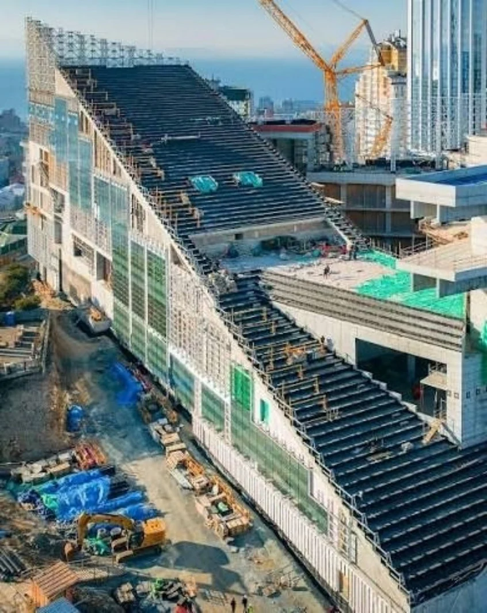
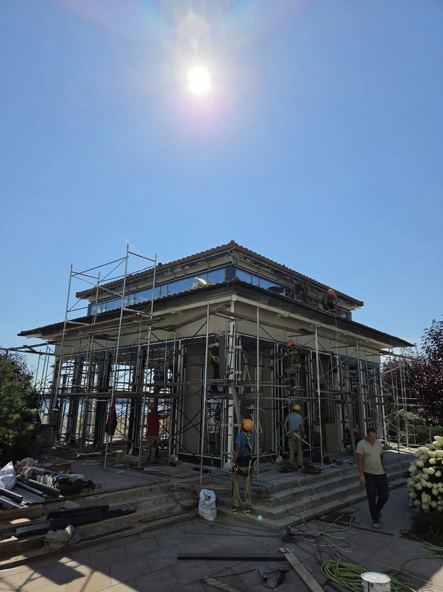
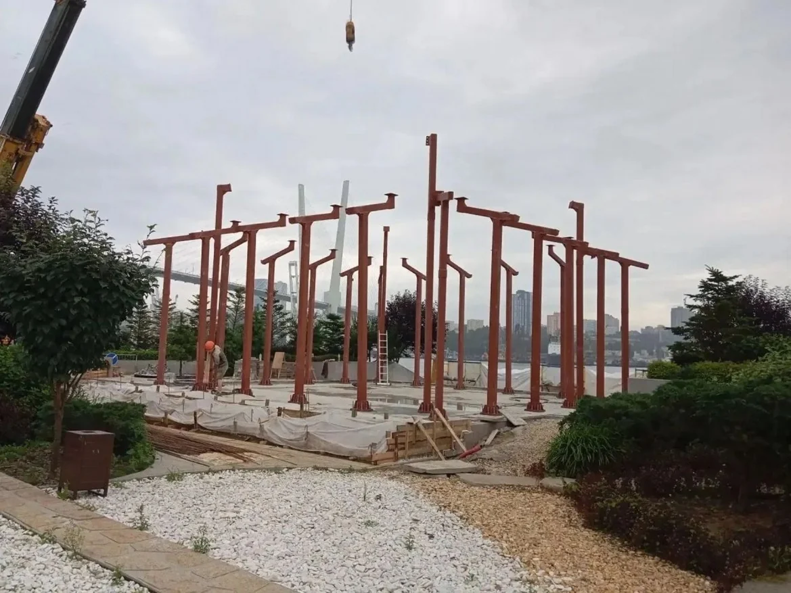
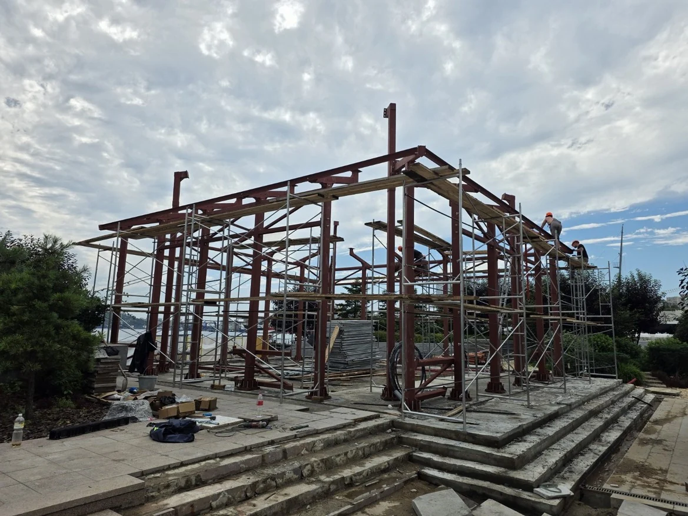

01Музейно-театральный комплекс · сложная геометрия
Разобраться в задаче
Начинаем с назначения здания, чертежей и условий площадки. Уточняем состав работ, исходные данные и ожидаемый результат.
О компании
ФАСАД.PRO — фирменный стиль компании «Мастер Склад Владивосток». Опыт команды объединяет инженерную подготовку, снабжение и монтаж.

Ресторан в японском стиле · рабочая площадка
Команда на объекте
Инженерная подготовка, снабжение и монтаж должны работать в одной последовательности.
Рабочая съёмка / 18 секунд
Обход площадки: остекление, примыкания и условия доступа. Такие детали помогают подготовить исходные данные для обсуждения работ.
Фасад на стадии обследования. Без звука.
03 / Компания
ФАСАД.PRO — новый фирменный стиль компании «Мастер Склад Владивосток».
Объединяем монтажников, инженеров и специалистов по работам на высоте. Команду и оборудование подбираем под технологию, объём и график объекта.
120 специалистов с 1-й группой по высоте и 60 монтажников, включая бригадиров, со 2-й группой.
Автовышки высотой 45 и 56 метров. Геодезическое оборудование, инструмент и страховочная экипировка.
Геодезисты, конструкторы, инженеры по безопасности, электрики и промышленные альпинисты.
Подключаемся к проектам по всей России, включая Дальний Восток и Северные регионы.
Договор с НДС · СРО и лицензия МЧС — по запросу
Профильные специалисты
От задачи до результата
Каждый проект — своя геометрия,
условия и последовательность работ.

01Музейно-театральный комплекс · сложная геометрия
Начинаем с назначения здания, чертежей и условий площадки. Уточняем состав работ, исходные данные и ожидаемый результат.

02Ресторан · этап возведения каркаса
Согласуем последовательность участков, доступ к рабочим зонам и поставку материалов с учётом графика строительства.

03Ресторан · работа на площадке
Объединяем инженерную подготовку, снабжение и монтаж. На проекте ресторана работы велись круглосуточно и параллельно на нескольких участках.
Ресторан · готовый фасад
Сверяем выполненный объём с согласованной задачей. Порядок контроля, комплект документов и условия приёмки закрепляем для конкретного объекта.
СРО, лицензию МЧС и условия работы можно запросить у менеджера.
Задачи разные. Подход предметный.
Выберите свою роль в проекте.
Фасадный комплекс или отдельный этап: согласуем границы ответственности, исходные данные и последовательность работ.
Согласовать состав работОконные и фасадные системы, комплектация и монтаж. Обсудим архитектуру, объёмы и этапы реализации.
Обсудить комплектацию объектаНачнём с состояния конструкций и описания проблемы. Подберём состав ремонтных работ с учётом эксплуатации здания.
Обсудить ремонт фасада